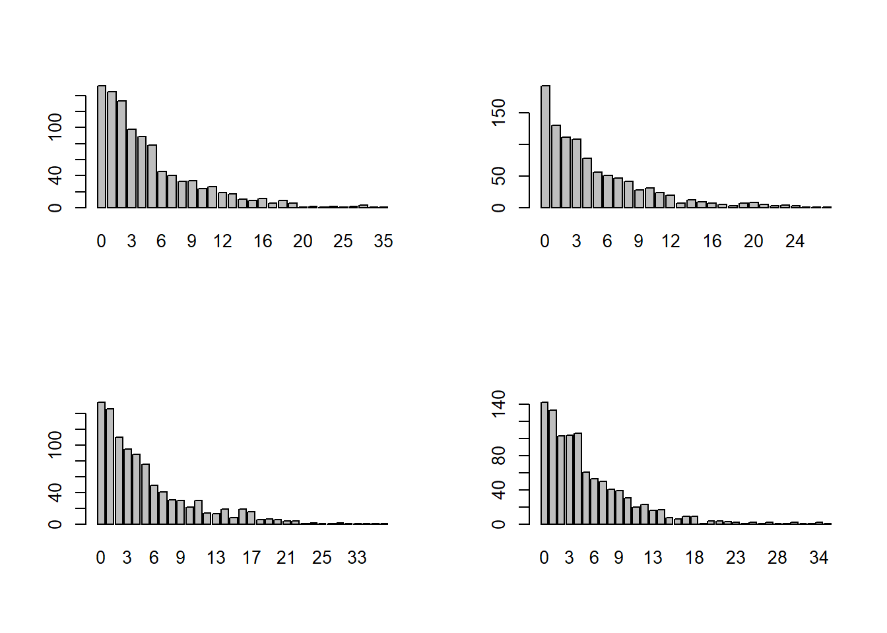

Ας υποθέσουμε ότι έχουμε ένα τυχαίο πείραμα με δυο πιθανά αποτελέσματα (π.χ. επιτυχία – αποτυχία). Ο αριθμός των αποτυχημένων δοκιμών, έως ότου να έχουμε για πρώτη φορά μια επιτυχία ακολουθούν τη γεωμετρική κατανομή.
Ας το δούμε και λίγο καλύτερα! Στη ρώσικη ρουλέτα διαθέτουμε ένα εξάσφαιρο όπου περιέχει μόνο 1 σφαίρα. Οι άλλοι θάλαμοι είναι κενοί. Ο παίκτης περιστρέφει τον κύλινδρο, βάζει την κάνη του όπλου στον κρόταφό του και πατά την σκανδάλη. Προφανώς, κερδίζει αν μείνει ζωντανός.
Θα παίξουμε (θεωρητικά, προφανώς) αυτό το «παιχνίδι» αρκετές φορές, και θα δούμε σε πόσες από αυτές χρειάστηκαν 0, 1, 2, 3 κτλ φορές μέχρι να εκπυρσοκροτήσει το όπλο και ν’ αφήσουμε για πάντα τον κόσμο ετούτο. Να σημειώσουμε εδώ πως κάθε φορά ξαραπεριστρέφουμε το θάλαμο του εξάσφαιρου, οπότε η πιθανότητα να μείνουμε ζωντανοί θα διατηρείται πάντα \(\frac{1}{6}\). Θα παίξουμε, λοιπόν, ρώσικη ρουλέτα μέχρι να χάσουμε, μετά θα ξαναπαίξουμε μέχρι να χάσουμε κ.ο.κ. για 1000 φορές. Αυτή τη 1000άδα θανάτων και νεκραναστάσεων θα την παίξουμε 4 φορές, για να δούμε καλύτερα τον παράγοντα «τύχη».
Γράφουμε λοιπόν:
par( mfrow= c(2,2) )
for (i in 1:4) {
set.seed(100*i)
xilia_paixnidia <- rgeom(1000, 1/6)
pin_syxn <- table(xilia_paixnidia)
barplot(pin_syxn)
}
Τι διαπιστώνουμε από αυτά τα ραβδογράμματα; Διαπιστώνουμε ότι είναι πιο πιθανό να εκπυρσοκροτήσει το όπλο κατευθείαν, δηλαδή να μην έχουμε ούτε μία «αποτυχημένη» προσπάθεια μέχρι την «επιτυχία» του πυροβολησμού, συγκριτικά με την πιθανότητα να μεσολαβήσει μία «αποτυχία» και στη 2η φορά να γίνει το «μπαμ». Αυτό είναι εύλογο, διότι για να συμβεί η εκπυρσοκρότηση τη 2η φορά θα πρέπει στην πιθανότητα της εκπυρσοκρότησης (\(\frac{1}{6}\)) να συνυπολογίσουμε και αυτή της μη-εκπυρσοκρότησης (\(\frac{5}{6}\)), άρα έχουμε μικρότερο αποτέλεσμα. Το ίδιο μπορούμε να πούμε και για τις άλλες περιπτώσεις.
Έστω τώρα ότι θέλουμε να βρούμε την πιθανότητα να χάσουμε στη ρώσικη
ρουλέτα στην 8η προσπάθεια. Θα χρειαστούμε τη συνάρτηση
dgeom().
Ας υποθέσουμε, λοιπόν, ότι έχουμε ένα τυχαίο πείραμα με δυο πιθανά αποτελέσματα (π.χ. επιτυχία – αποτυχία):
Η πιθανότητα επιτυχίας είναι ♠.
Θέλουμε να χρειαστούμε ♜ αποτυχημένες δοκιμές, έως ότου να έχουμε για πρώτη μια επιτυχία.
Η πιθανότητα να συμβεί αυτό είναι είναι dgeom(♜, ♠).
Έτσι, αφού η πιθανότητα να μείνουμε ζωντανοί στο ένα «παιχνίδι» είναι \(\frac{1}{6}\) κι αφού θέλουμε να χάσουμε στην 8η προσπάθεια, σημαίνει ότι θα έχουμε 7 απανωτές νίκες μέχρι αυτή.
Έτσι γράφουμε:
## [1] 0.04651361και βρίσκουμε 0.04651361. Οπότε μπορούμε να είμαστε 4.65% σίγουροι ότι θα μεσολαβήσουν ακριβώς 7 νίκες και στην 8η ρίψη θα έχουμε πεθάνει.
Συνολικά ο κώδικας που γράψαμε είναι ο κάτωθι: